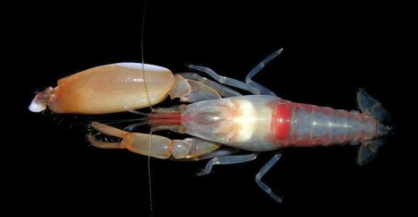
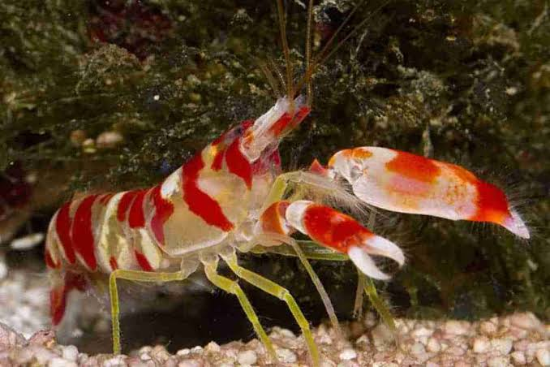
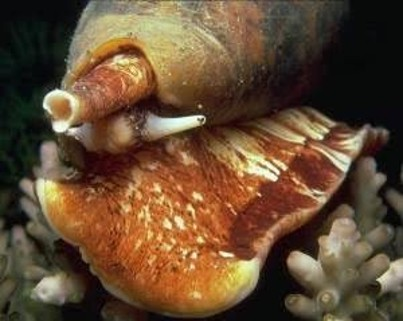
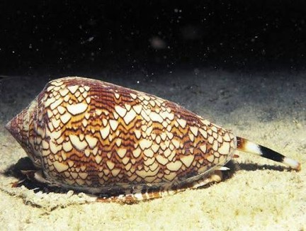
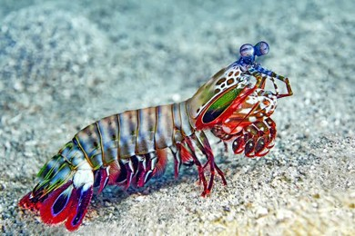
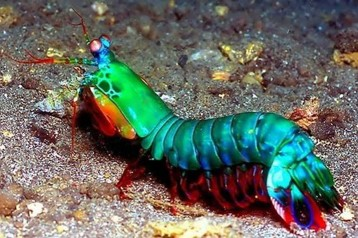

Weapons
The Pistol Shrimp
Many pistol shrimp species have one disproportionately large "claw" (more accurately the chelae) which is larger than half the shrimp's body; this claw may be found on either "arm" (first pair of legs or chelipeds). It is a modification of the typical crustacean "pincer" which forms a pistol-like organ made of two parts: a joint allows the "hammer" component to move backward into a right-angled position. When released, it snaps into the other part of the claw, emitting an enormously powerful wave of bubbles capable of stunning larger fish and breaking small glass jars.


Textile Cone Snail
The textile cone snail (Conus textile) is a beautiful but highly venomous marine snail found in the warm waters of the Indo-Pacific. Despite its slow movement and decorative, patterned shell, this small predator is surprisingly dangerous. It hunts other snails using a specialized, harpoon-like tooth that injects powerful venom into its prey. Its venom contains a complex mixture of toxins that affect the nervous system and can be deadly to humans. The textile cone snail is a perfect example of how appearances can be deceiving in the animal kingdom!


Rainbow Mantis Shrimp
The peacock mantis shrimp (Odontodactylus scyllarus), also known as the rainbow mantis shrimp, is a colorful marine predator found in the tropical waters of the Indo-Pacific. Despite its small size, it possesses one of the fastest and most powerful punches in the animal kingdom. Its specialized club-like limbs strike with incredible speed, creating shock waves and tiny collapsing bubbles that can stun prey and crack open hard shells. With its extraordinary eyesight and explosive strength, the peacock mantis shrimp is proof that some of nature's most impressive weapons come in small packages!

